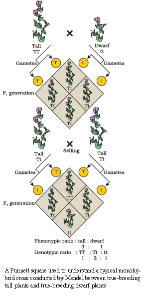
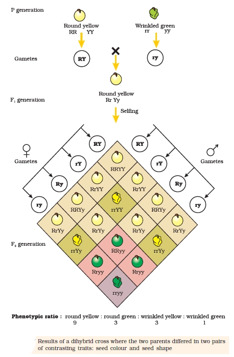

Biology
Chapter 4 The work of Mendel and others who followed him gave us an
Why offspring resemble parents, yet siblings show differences
Genetics: Inheritance & Variation
📖Definition & Introduction
- Genetics is the branch of biology that studies inheritance and variation of characters from parents to offspring.
- Inheritance is transmission of traits from parents to progeny; it forms the basis of heredity.
- Variation is the degree to which offspring differ from their parents and from each other.
- Offspring resemble parents because hereditary information is passed via gametes and expressed during development.
- Offspring differ because sexual reproduction reshuffles alleles, creating new combinations.
🖼️Diagram
Inheritance causes resemblance; sexual reproduction generates variation by new genetic combinations.
🎯Key Concepts
- 👨👩Siblings are similar due to shared parents, yet can differ due to different allele combinations.
- 🧫Traits are controlled by discrete units (genes/alleles); alleles segregate during gamete formation.
- ♀️♂️Sexual reproduction is a major natural source of variation in populations.
- 🌾Artificial selection uses naturally occurring variation to increase desirable traits in domesticated forms.
- 🐄Domestication from ancestral wild cows produced Indian breeds like Sahiwal (Punjab) via selection.
🔎CORE QUESTIONS GENETICS ANSWERS
- Why an elephant produces only an elephant, and a mango seed produces only a mango plant.
- Whether offspring are identical to parents or show differences (variation).
- Why siblings can look very similar sometimes, yet very different at other times.
- How heredity can be stable across generations, yet still allow diversity in a population.
⚙️EARLY HUMAN ARTIFICIAL SELECTION (DOMESTICATION)
- Ancient humans (8000–1000 B.C.) noticed variation associated with sexual reproduction.
- They selected parents with desirable traits and repeatedly bred them (artificial selection).
- This increases the frequency of desired traits in the domesticated population over many generations.
- Example: domestication from ancestral wild cows contributed to breeds like Sahiwal (Punjab).
⚖️Inheritance vs Variation
| Basis | Inheritance | Variation |
|---|---|---|
| Meaning | Passing of characters from parents to offspring (basis of heredity). | Differences among offspring and between offspring and parents. |
| Main outcome | Resemblance of offspring to parents (species continuity). | Diversity within a family/population (raw material for selection). |
| Seen clearly in | Offspring belonging to the same species as parents. | Siblings showing different trait combinations. |
| Key driver in nature | Transmission of hereditary information via gametes. | Sexual reproduction generating new genetic combinations. |
| Human use | Identify and preserve desirable traits by breeding. | Artificial selection uses existing variation to improve breeds/varieties. |
✏️Solved Q&A
1
Explain how offspring can resemble their parents yet still show differences from them.
Answer:
Inheritance transmits hereditary information (genes/alleles) from parents to offspring through gametes, so many traits are shared.
During meiosis, alleles segregate and recombine, so gametes from the same parent are not identical.
Random fusion of two gametes at fertilisation produces a zygote with a unique allele combination.
Therefore, inheritance causes resemblance, while recombination and random fertilisation cause variation.
Inheritance transmits hereditary information (genes/alleles) from parents to offspring through gametes, so many traits are shared.
During meiosis, alleles segregate and recombine, so gametes from the same parent are not identical.
Random fusion of two gametes at fertilisation produces a zygote with a unique allele combination.
Therefore, inheritance causes resemblance, while recombination and random fertilisation cause variation.
✓ Resemblance occurs due to transmission of hereditary information; differences arise because sexual reproduction produces new allele combinations.
2
A student says: "If variation exists, offspring may become a different species than the parents." Correct the statement using inheritance and variation.
Answer:
Inheritance maintains species-specific characteristics, so offspring belong to the same species as their parents.
Variation usually means differences among individuals within the same species (e.g., siblings).
Formation of a new species typically requires accumulation of heritable differences over many generations in populations, not a single birth event.
So, inheritance ensures continuity, and variation provides diversity within a species.
Inheritance maintains species-specific characteristics, so offspring belong to the same species as their parents.
Variation usually means differences among individuals within the same species (e.g., siblings).
Formation of a new species typically requires accumulation of heritable differences over many generations in populations, not a single birth event.
So, inheritance ensures continuity, and variation provides diversity within a species.
✓ Variation produces differences among individuals of the same species; it does not make a single offspring a new species, because inheritance maintains species identity.
💡Memory Technique
“IRV Rule: Inheritance → Resemblance, Variation → Variety”
📌Quick Recap
Genetics = study of inheritance + variation.Inheritance: characters are passed from parent to progeny; basis of heredity.Variation: degree to which progeny differ from parents and from each other.Species continuity: offspring belong to the same species as their parents due to inheritance.Sexual reproduction increases variation via meiosis (recombination/segregation) and random fertilisation.Artificial selection: humans choose desirable variants and breed them repeatedly over generations.Domestication example: ancestral wild cows → Indian breed Sahiwal (Punjab).
How pea-plant hybridisation (1856–1863) was planned to give clear, testable observations
MENDEL'S EXPERIMENTS SETUP
📖Definition & Introduction
- Mendel’s experiment setup = planned hybridisation of true-breeding pea lines, followed by tracking the chosen character across successive generations using careful scoring and large progeny numbers.
- Organism: garden pea (Pisum sativum); duration: seven years (1856–1863).
- He chose characters with two clear alternatives (contrasting pairs) to reduce ambiguity in scoring.
- Artificial pollination enabled controlled cross-pollination (hybridisation) and selfing when required.
- He used statistical/mathematical logic to interpret patterns from repeated observations.
- He started with 14 true-breeding varieties arranged as 7 contrasting characters, studying one character difference at a time.
🖼️Diagram
Core setup: cross two true-breeding parents differing in one character, then follow progeny across generations.
🎯Key Concepts
- 🧪Controlled crosses: emasculation (anther removal) + pollen transfer prevent unwanted selfing and contamination.
- 🧬True-breeding lines: stable trait expression after continuous self-pollination for several generations.
- 📊Robustness: large progeny numbers + repetition across generations make patterns dependable.
- 🔁Successive generations: track P → F1 → selfing → F2 to check reappearance of the hidden trait.
- 🎯One-variable design: parents similar except one character, so outcomes map to that character.
🔎WHY GARDEN PEA WAS A STRONG CHOICE
- Many clear contrasting traits; scoring is unambiguous.
- Naturally self-pollinating → easy to maintain true-breeding stocks.
- Crossing can be manually controlled by removing anthers and applying selected pollen.
- Many seeds per cross → supports large progeny numbers.
- Short generation time and easy cultivation → supports successive generation study.
⚙️MENDEL’S EXPERIMENTAL DESIGN (WHAT MADE IT ROBUST)
- One character at a time: start with lines differing in only one character (monohybrid setup).
- Use 14 varieties arranged as 7 pairs: similar except for the target character.
- Record offspring phenotypes carefully and interpret using statistical reasoning.
- Confirm by observing F1, F2 and further generations (not one-off).
- Prevent mixing/contamination: label flowers, protect pollinated buds, harvest seeds separately.
⚖️TRUE-BREEDING (PURE LINE) vs HYBRID (F1)
| Basis | True-breeding line | Hybrid (F1) |
|---|---|---|
| How obtained | Continuous self-pollination for generations (with selection for the same trait each generation) | From cross of contrasting true-breeding parents |
| Trait in progeny on selfing | Stable, same phenotype each generation for that character | On selfing, segregation may appear in later generations (e.g., F2) |
| Typical genotype idea | Usually homozygous for the character | Typically heterozygous for the character |
| Use in Mendel’s setup | Fixes parental traits before crossing, so results can be attributed to the planned cross | Allows tracking of how a character behaves across generations after hybridisation |
✏️Solved Q&A
1
A student crosses two pea plants and gets mixed phenotypes already in the F1. What setup mistake is most likely, and how should it be fixed to match Mendel’s approach?
Answer:
Mixed phenotypes in F1 usually indicate that at least one parent was not true-breeding for the chosen character and/or pollination was uncontrolled.
In Mendel’s setup, parental lines were first made/verified true-breeding by repeated selfing and selection for stable expression over generations.
During crossing, use emasculation and apply only the chosen pollen, then label and isolate the pollinated flowers and keep harvested seeds separate.
Mixed phenotypes in F1 usually indicate that at least one parent was not true-breeding for the chosen character and/or pollination was uncontrolled.
In Mendel’s setup, parental lines were first made/verified true-breeding by repeated selfing and selection for stable expression over generations.
During crossing, use emasculation and apply only the chosen pollen, then label and isolate the pollinated flowers and keep harvested seeds separate.
✓ Most likely: parents not true-breeding and/or contamination by unwanted pollen. Fix: use confirmed true-breeding parents and perform controlled artificial pollination with strict labelling and isolation.
2
Why did Mendel prefer characters with two sharply contrasting traits (round vs wrinkled) rather than continuously varying traits?
Answer:
Two clear alternatives make scoring objective: each plant can be placed confidently into one category.
Objective scoring reduces ambiguity and supports comparison across large progeny numbers and repeats.
This design helps test whether traits remain discrete across generations rather than blending.
Two clear alternatives make scoring objective: each plant can be placed confidently into one category.
Objective scoring reduces ambiguity and supports comparison across large progeny numbers and repeats.
This design helps test whether traits remain discrete across generations rather than blending.
✓ Because sharply contrasting traits are easy to classify consistently, enabling reliable scoring across large numbers and generations and helping demonstrate discrete inheritance.
💡Memory Technique
“Mnemonic for 7 pea characters: H C P S C S C”
📌Quick Recap
Mendel performed hybridisation experiments on garden pea during 1856–1863 (seven years).A true-breeding line shows stable expression of a character after continuous self-pollination for several generations.Mendel began with 7 characters, each with two contrasting traits → 14 true-breeding varieties (paired).Controlled crossing steps: emasculation of selected flower bud → apply desired pollen → isolate/label → harvest seeds separately.Tracking design: record phenotypes across P → F1 → F2 (and further) to check reappearance of the masked trait.7 characters: stem height, flower colour, flower position, pod shape, pod colour, seed shape, seed colour.
Tall × dwarf peas: F1 uniformity, F2 reappearance, and Mendelian ratios (no blending)
MONOHYBRID CROSS RESULTS
📖Definition & Introduction
- Monohybrid cross studies inheritance of one gene with two contrasting alleles (e.g., T vs t).
- In pea height, T (tall) is dominant over t (dwarf) under complete dominance.
- True-breeding parents: TT (tall) × tt (dwarf) produce uniform F1: all Tt (tall).
- Self-pollination of F1 (Tt × Tt) gives F2 where the recessive phenotype reappears.
- F2 shows no blending: plants are either tall or dwarf, not intermediate.
🖼️ Diagram

🎯Key Concepts
- 🧬Alleles stay discrete and segregate during gamete formation (Law of Segregation).
- 🌾F1 uniformity: heterozygote (Tt) expresses only the dominant phenotype (tall).
- 🔁F2 reappearance of recessive: tt forms again due to random fertilisation.
- 🎯F2 phenotypic ratio = 3 tall : 1 dwarf (complete dominance case).
- 📌F2 genotypic ratio = 1 TT : 2 Tt : 1 tt; dominant phenotype hides two genotypes.
🔎P → F1: WHY IS F1 UNIFORM?
- Use true-breeding parents: TT produces only T gametes; tt produces only t gametes.
- All zygotes become Tt, so all F1 show tall phenotype (dominant masks recessive).
- Uniformity is an outcome of complete dominance plus homozygous parents.
⚙️F1 SELFING → F2: HOW DO 3:1 AND 1:2:1 ARISE?
- In Tt, alleles segregate: half gametes carry T, half carry t (equal types).
- Random fertilisation combines gametes to form TT, Tt, tt in 1:2:1.
- Because Tt looks like TT, phenotypes collapse to 3 tall : 1 dwarf.
- Reappearance of dwarf in F2 proves no blending and supports Law of Segregation.
⚖️F1 vs F2 (MONOHYBRID CROSS: COMPLETE DOMINANCE)
| Basis | F1 generation | F2 generation |
|---|---|---|
| How formed | TT × tt (cross-pollination) | Selfing of F1: Tt × Tt |
| Uniformity | All individuals same phenotype | Individuals show two phenotypes |
| Phenotypes observed | Only dominant (Tall) | Tall and dwarf; dwarf reappears |
| Key ratio | No ratio (all Tall) | Phenotype 3:1; Genotype 1:2:1 |
| Inference | Dominance masks recessive | Segregation + random fertilisation restore recessive |
| Blending? | No (not intermediate) | No (traits remain discrete) |
✏️Solved Q&A
1
In pea plants, a true-breeding tall plant is crossed with a true-breeding dwarf plant. What are the F1 phenotype and genotype? Explain why no dwarf appears in F1.
Answer:
True-breeding tall = TT; true-breeding dwarf = tt.
Gametes: TT gives only T; tt gives only t.
All fertilisations form Tt zygotes → all F1 are tall due to dominance of T.
True-breeding tall = TT; true-breeding dwarf = tt.
Gametes: TT gives only T; tt gives only t.
All fertilisations form Tt zygotes → all F1 are tall due to dominance of T.
✓ F1 genotype: all Tt; F1 phenotype: all tall; dwarf is masked in heterozygote.
2
An F1 tall plant from a tall × dwarf monohybrid cross is self-pollinated. In F2, dwarf plants appear. State the phenotypic and genotypic ratios and justify the reappearance of dwarf without blending.
Answer:
F1 is Tt; during gamete formation alleles segregate → gametes are T and t in equal numbers.
Random fertilisation gives genotypes TT, Tt, tt in the ratio 1:2:1.
Phenotype: TT and Tt are tall; tt is dwarf → 3 tall : 1 dwarf.
Dwarf reappears because t allele was carried silently in F1; alleles remain discrete (no blending).
F1 is Tt; during gamete formation alleles segregate → gametes are T and t in equal numbers.
Random fertilisation gives genotypes TT, Tt, tt in the ratio 1:2:1.
Phenotype: TT and Tt are tall; tt is dwarf → 3 tall : 1 dwarf.
Dwarf reappears because t allele was carried silently in F1; alleles remain discrete (no blending).
✓ F2 genotypic ratio 1 TT : 2 Tt : 1 tt; F2 phenotypic ratio 3 tall : 1 dwarf; dwarf reappears due to segregation and random fertilisation, not blending.
⭐Important Points
- Use same letter for alleles: T and t, not unrelated letters (e.g., T and d).
- In complete dominance, heterozygote phenotype = dominant; Tt looks like TT.
- F2 dominant phenotype contains two genotypes (TT and Tt).
- Reappearance of recessive in F2 is key evidence for discrete inheritance and segregation.
- Self-pollination (selfing) of F1 is essential to observe segregation in F2.
💡Memory Technique
“Mnemonic: U → R → 3:1”
📌Quick Recap
Parental cross (true-breeding): TT × tt (Tall × Dwarf).F1 result: all Tt and all Tall (uniformity).F1 gametes: from Tt → T and t in equal proportion.F2 genotypes (selfing): 1 TT : 2 Tt : 1 tt.F2 phenotypes (complete dominance): 3 Tall : 1 Dwarf.Key conclusion: no blending; recessive allele is masked in F1 but not lost.
From Mendel’s factors to genes: symbols, genotype–phenotype, zygosity, dominance
GENE–ALLELE CONCEPTS
📖Definition & Introduction
- Gene = unit of inheritance carrying information to express a particular trait.
- Alleles = alternative forms of the same gene controlling contrasting traits (e.g., tall vs dwarf).
- Diploid organisms carry alleles in pairs; one allele comes from each parent via gametes.
- Genotype = allelic composition (TT, Tt, tt); phenotype = observable trait (tall/dwarf).
- Dominant allele expresses in heterozygote; recessive expresses only when homozygous.
🖼️Diagram
Gene → alleles → genotype; phenotype depends on dominance relationships.
🎯Key Concepts
- 🔤Allele symbols: use same letter; capital = dominant (T), small = recessive (t).
- 👀Phenotype may hide genotype: TT and Tt look same when dominance is complete.
- 🧩Homozygous: identical alleles (TT/tt); heterozygous: different alleles (Tt).
- 🎭Dominance: in Tt, T masks t, so phenotype is tall though t is present.
- 🌱True-breeding lines are usually homozygous; they give same trait on selfing.
- 🎲Alleles remain discrete and segregate into gametes; no blending of traits.
🔎ALLELE SYMBOL CONVENTIONS (EXAM-SAFE)
- Use one letter for a gene’s alleles: T and t, not T and d.
- Capital letter denotes allele whose trait appears in F1 (dominant under complete dominance).
- Write genotypes with two alleles in diploids: TT, Tt, tt (order doesn’t matter).
- Phenotype name is written in words (tall/dwarf), not as allele symbols.
⚙️DOMINANT VS RECESSIVE: WHAT IT MEANS (AND WHAT IT DOES NOT)
- Dominant allele is expressed in heterozygote: Tt is tall if T is dominant.
- Recessive allele is masked in heterozygote and expressed only as tt.
- Dominant ≠ more common, stronger, or better; it is only about heterozygote expression.
- Recessive trait can reappear in F2 because alleles segregate without blending.
⚖️KEY CONTRASTS: TERMS THAT EXAMS MIX UP
| Basis | Genotype / Homozygous / Dominant | Phenotype / Heterozygous / Recessive |
|---|---|---|
| What it refers to | Genotype: allele pair (TT, Tt, tt); Homozygous: TT or tt; Dominant: expressed in Tt | Phenotype: visible trait (tall/dwarf); Heterozygous: Tt; Recessive: expressed only as tt |
| Can you see it directly? | Genotype not always visible; TT and Tt can look identical | Phenotype is observable; heterozygote may or may not look intermediate (depends on dominance) |
| Link to true-breeding | True-breeding lines are typically homozygous (TT or tt) | Not true-breeding if heterozygous (Tt) under complete dominance |
| Typical exam inference | Dominant phenotype does not confirm genotype | Recessive phenotype usually confirms homozygous recessive (tt) in complete dominance |
✏️Solved Q&A
1
In pea, tall (T) is dominant over dwarf (t). A plant is tall. What are the possible genotypes? How can you decide which one it is?
Answer:
Tall phenotype can arise from TT or Tt because T expresses in heterozygote.
Phenotype alone cannot distinguish TT vs Tt under complete dominance.
Use a test cross: cross the tall plant with tt (dwarf).
If all offspring are tall → tested parent is TT; if any dwarf appears → tested parent is Tt.
Tall phenotype can arise from TT or Tt because T expresses in heterozygote.
Phenotype alone cannot distinguish TT vs Tt under complete dominance.
Use a test cross: cross the tall plant with tt (dwarf).
If all offspring are tall → tested parent is TT; if any dwarf appears → tested parent is Tt.
✓ Possible genotypes: TT or Tt; decide by test cross with tt.
2
A student writes: "Alleles for height are T (tall) and d (dwarf)." Explain why this is wrong and write the correct allele symbols and genotypes.
Answer:
Alleles are alternative forms of the same gene, so they should be denoted by the same letter.
Using different letters (T and d) hides that they are a pair at the same locus and confuses crosses.
Correct notation: T (dominant tall) and t (recessive dwarf).
Correct genotypes: TT (tall), Tt (tall), tt (dwarf).
Alleles are alternative forms of the same gene, so they should be denoted by the same letter.
Using different letters (T and d) hides that they are a pair at the same locus and confuses crosses.
Correct notation: T (dominant tall) and t (recessive dwarf).
Correct genotypes: TT (tall), Tt (tall), tt (dwarf).
✓ Use same letter: T and t; genotypes TT, Tt, tt.
💡Memory Technique
“Mnemonic: Geno = Genetic letters; Pheno = Physical look”
📌Quick Recap
Gene = unit of inheritance; alleles = alternative forms of the same gene.Allele notation: capital letter = dominant; small letter = recessive (T/t).Genotype: TT, Tt, tt; Phenotype: tall or dwarf (observable).Homozygous: TT or tt; Heterozygous: Tt.Complete dominance: heterozygote expresses dominant trait (Tt looks tall).Dominant phenotype may hide genotype; use test cross with homozygous recessive to reveal it.
Predict offspring genotypes using gametes, probability, and a test cross for unknown dominant genotype
PUNNETT SQUARE & TEST CROSS
📖Definition & Introduction
- Punnett square is a grid method to list all possible zygote genotypes from parental gametes and their probabilities.
- Developed by Reginald C. Punnett; it converts random fertilisation into a complete outcome table.
- For a heterozygote (e.g., Tt), gametes carry T or t in equal proportion due to segregation.
- Binomial representation compacts Punnett outcomes when gamete probabilities are known (e.g., (12T + 12t)²).
- Test cross = cross a dominant-phenotype individual (unknown genotype) with a homozygous recessive to reveal the genotype.
🖼️Diagram
Punnett square predicts F2 genotypes; test cross with recessive reveals an unknown dominant genotype.
🎯Key Concepts
- 🎲Random fertilisation + known gamete types ⇒ predictable genotype probabilities.
- 🧩In complete dominance, the dominant phenotype can hide two genotypes (e.g., TT and Tt).
- 📊Monohybrid selfing: genotypes 1:2:1; phenotypes 3:1 (only when dominance is complete).
- 🧪Test cross rule: recessive offspring appearing ⇒ tested parent was heterozygous.
- 🧠Binomial square links gamete probabilities to zygote proportions without redrawing the grid.
🔎HOW TO DRAW A PUNNETT SQUARE (MONOHYBRID)
- Write parental genotypes; list possible gametes from each parent (one allele per gamete).
- Place one parent’s gametes on top row, the other parent’s on left column.
- Fill each box by combining row + column alleles; identical boxes add to a ratio.
- Convert genotype ratio to phenotype ratio only after applying dominance (if stated complete).
⚙️BINOMIAL VIEW OF GENOTYPE PROBABILITIES
- A heterozygote makes two gamete types equally: 12 for each allele (by segregation).
- For selfing Tt × Tt, zygote outcomes match the square of gamete mixture.
- So (12T + 12t)² gives 14TT : 12Tt : 14tt.
⚖️SELF CROSS vs TEST CROSS (DOMINANT PHENOTYPE INDIVIDUAL)
| Basis | Selfing (dominant phenotype × itself) | Test cross (dominant phenotype × recessive) |
|---|---|---|
| Purpose | Shows segregation pattern across generations | Finds whether dominant parent is homozygous or heterozygous |
| Mate used | Same phenotype genotype may be unknown | Always homozygous recessive (e.g., vv) |
| Key inference | Dominant phenotype may still hide 2 genotypes | Recessive offspring present ⇒ tested parent is heterozygous |
| Typical outcomes | Often 3:1 phenotype if both parents are heterozygous | All dominant if homozygous; 1:1 if heterozygous |
✏️Solved Q&A
1
A tall pea plant has genotype either TT or Tt. It is test-crossed with a dwarf plant tt. What offspring phenotypes decide the unknown genotype?
Answer:
In a test cross, the recessive parent tt makes only t gametes.
If unknown is TT, it makes only T gametes → all offspring Tt (all tall).
If unknown is Tt, it makes T and t gametes → offspring Tt (tall) and tt (dwarf).
Appearance of any dwarf offspring means the unknown parent contributed t, so it must be Tt.
In a test cross, the recessive parent tt makes only t gametes.
If unknown is TT, it makes only T gametes → all offspring Tt (all tall).
If unknown is Tt, it makes T and t gametes → offspring Tt (tall) and tt (dwarf).
Appearance of any dwarf offspring means the unknown parent contributed t, so it must be Tt.
✓ All tall offspring ⇒ parent is TT; a 1:1 tall:dwarf outcome ⇒ parent is Tt.
2
A violet-flowered plant (unknown genotype VV or Vv) is crossed with a white plant vv. Offspring include both violet and white flowers. Infer the violet parent’s genotype and the expected phenotypic ratio.
Answer:
White parent vv produces only v gametes.
White offspring must be vv; so the violet parent must sometimes contribute v.
Therefore the violet parent cannot be VV; it must be Vv.
A Vv × vv test cross yields half Vv (violet) and half vv (white).
White parent vv produces only v gametes.
White offspring must be vv; so the violet parent must sometimes contribute v.
Therefore the violet parent cannot be VV; it must be Vv.
A Vv × vv test cross yields half Vv (violet) and half vv (white).
✓ Violet parent is Vv; expected phenotypic ratio = 1:1 violet:white.
💡Memory Technique
“Mnemonic: TEST = To Expose Silent Trait”
📌Quick Recap
Punnett square: list gametes → fill combinations → read genotype proportions.Monohybrid cross: TT × tt → F1 all Tt (dominant phenotype).F1 selfing: Tt × Tt → genotypes 1:2:1 and phenotypes 3:1 (complete dominance).Binomial shorthand: (12T + 12t)² → 14TT + 12Tt + 14tt.Test cross: V_ × vv; all dominant offspring ⇒ VV, but 1:1 dominant:recessive ⇒ Vv.Inference rule: recessive phenotype among test-cross progeny ⇒ tested parent heterozygous.
From TT × tt to F1 uniformity and F2 3:1—why alleles stay discrete and separate in gametes
MENDEL'S LAWS (MONOHYBRID): DOMINANCE & SEGREGATION
📖Definition & Introduction
- Law of Dominance: in a heterozygote, one allele expresses (dominant) and masks the other (recessive).
- Law of Segregation: allele pairs separate during gamete formation; each gamete carries only one allele.
- Mendel’s factors are now called genes; alternative forms are alleles (e.g., T, t).
- Alleles occur in pairs in diploids; one allele comes from each parent.
- Traits do not blend: recessive trait disappears in F1 but reappears unchanged in F2.
🖼️Diagram
Monohybrid cross (height): dominance explains F1, segregation during meiosis explains F2 reappearance.
🎯Key Concepts
- 🌱Monohybrid cross: parents differ in one character (e.g., height: Tall vs dwarf).
- 👀F1 shows uniformity: only the dominant phenotype appears (masking of recessive).
- 🧩In a dissimilar pair (Tt), T dominates; t is masked but not lost.
- 🎲Heterozygote makes two gamete types in equal proportion: 50% T, 50% t.
- 🧫Meiosis provides the basis: homologous chromosomes (and alleles) segregate into different gametes.
🔎LAW OF DOMINANCE (FROM MONOHYBRID CROSS)
- Characters are controlled by discrete factors (genes), not by blending.
- Factors occur in pairs in diploid organisms (one from each parent).
- In a dissimilar pair (heterozygote), one allele is dominant and masks the recessive.
- Explains why F1 from true-breeding parents shows only one parental trait (uniformity).
- Dominant phenotype in F2 includes two genotypes (e.g., TT and Tt).
⚙️LAW OF SEGREGATION (GAMETE FORMATION & F2 RATIO IDEA)
- Alleles do not blend; the recessive allele remains intact in F1 and can reappear in F2.
- During meiosis, allele pair segregates so each gamete gets only one allele.
- Homozygote produces one type of gamete (TT → T only; tt → t only).
- Heterozygote produces two gamete types in equal proportion (Tt → 50% T, 50% t).
- Random fertilisation of these gametes gives F2 1:2:1 genotypes and 3:1 phenotypes (complete dominance).
⚖️Law of Dominance vs Law of Segregation
| Basis | Law of Dominance | Law of Segregation |
|---|---|---|
| Core idea | In Tt, T expresses; t is masked | In meiosis, T and t separate into different gametes |
| Explains | Why F1 shows only one parental phenotype | Why recessive phenotype reappears in F2 |
| What happens to recessive allele in F1 | Present but unexpressed | Enters gametes in 50% cases from heterozygote |
| Gamete outcome from Tt | Not a gamete law | Two gamete types: T and t in equal proportion |
| Common exam link | F2 phenotypic ratio becomes 3:1 under complete dominance | F2 genotypes arise from random fusion of segregated alleles |
✏️Solved Q&A
1
In a pea monohybrid cross for height, true-breeding Tall is crossed with true-breeding dwarf. F1 plants are all tall. Which Mendelian law explains this and what is the genotype of F1?
Answer:
Parents are true-breeding, so genotypes are TT (Tall) and tt (dwarf).
All F1 receive one allele from each parent: T from TT and t from tt, so F1 genotype is Tt.
F1 phenotype is tall because in a dissimilar pair (Tt), T masks t (Law of Dominance).
Parents are true-breeding, so genotypes are TT (Tall) and tt (dwarf).
All F1 receive one allele from each parent: T from TT and t from tt, so F1 genotype is Tt.
F1 phenotype is tall because in a dissimilar pair (Tt), T masks t (Law of Dominance).
✓ Explained by Law of Dominance; F1 genotype = Tt (all tall).
2
A student says: “The dwarf trait disappears in F1, so the allele t is lost.” Correct this statement using Mendel’s laws and gamete formation.
Answer:
The allele for dwarfness is recessive, so it is masked in the heterozygote (Tt)—it is not lost.
By the Law of Segregation, the two alleles separate during meiosis, so each gamete carries one allele.
A heterozygote (Tt) forms T and t gametes in equal proportion, allowing tt to form in F2 and dwarf to reappear.
The allele for dwarfness is recessive, so it is masked in the heterozygote (Tt)—it is not lost.
By the Law of Segregation, the two alleles separate during meiosis, so each gamete carries one allele.
A heterozygote (Tt) forms T and t gametes in equal proportion, allowing tt to form in F2 and dwarf to reappear.
✓ The t allele persists in F1 (masked) and segregates into 50% gametes; it reappears in F2 as tt.
⭐Important Points
- Use the same letter for alleles: T/t, V/v; different letters imply different genes.
- Dominance is about heterozygote expression: Tt looks like TT (complete dominance case).
- F2 shows both parental phenotypes because alleles remain discrete and segregate in meiosis.
- From Tt, gametes are T and t in equal numbers; this is central to segregation.
- Dominant phenotype in F2 hides genotype: tall can be TT or Tt.
💡Memory Technique
““DoMInance Masks; SEGregation Separates””
📌Quick Recap
Law of Dominance: factors occur in pairs; in a dissimilar pair, one dominates and masks the other.Law of Segregation: allele pair separates during meiosis; each gamete carries only one allele.Homozygous: TT or tt; Heterozygous: Tt.Heterozygote gametes: two types in equal proportion (T and t).Monohybrid F2 (complete dominance): phenotype 3 dominant : 1 recessive; genotype 1:2:1.No blending: recessive trait can reappear unchanged in F2.
When heterozygote phenotype is NOT identical to either homozygote: incomplete dominance & co-dominance
NON-MENDELIAN DOMINANCE
📖Definition & Introduction
- Non-Mendelian dominance refers to dominance patterns where the heterozygote phenotype differs from complete dominance.
- Incomplete dominance: heterozygote shows intermediate phenotype between both homozygotes.
- Co-dominance: heterozygote shows both parental phenotypes simultaneously (both alleles express).
- In incomplete dominance, genotypic ratio stays 1:2:1, and phenotypic ratio also becomes 1:2:1.
- In ABO blood group, a single gene has three alleles in a population: IA, IB, i (multiple alleles).
- With multiple alleles, individuals still carry only two alleles (diploid), but population shows >2 alleles.
🖼️Diagram
Heterozygote is intermediate (incomplete) or shows both (co-dominance), unlike complete dominance.
🎯Key Concepts
- 🌸Snapdragon (Antirrhinum): RR red, rr white, Rr pink (incomplete dominance).
- 🩸ABO: IA and IB co-dominant; both dominant over i (no antigen).
- 🎯Key exam hook: In both cases, heterozygote is a distinct phenotype class.
- 📌ABO outcome: 6 genotypes but 4 phenotypes (A, B, AB, O).
🔎INCOMPLETE DOMINANCE (SNAPDRAGON: Antirrhinum)
- Parental (true-breeding): RR (Red) × rr (White).
- F1: all Rr and Pink (intermediate phenotype).
- Selfing F1: Rr × Rr produces F2 genotypes RR, Rr, rr in 1:2:1.
- Because Rr is distinct (pink), F2 phenotypes become 1 Red : 2 Pink : 1 White.
- Key contrast: complete dominance gives F2 phenotype 3:1; incomplete dominance gives 1:2:1.
⚙️CO-DOMINANCE + MULTIPLE ALLELES (HUMAN ABO BLOOD GROUP)
- Gene I has three alleles in population: IA, IB, i (multiple alleles).
- IA makes A-type surface sugar; IB makes B-type; i makes none.
- Dominance: IA > i, IB > i, but IA and IB are co-dominant.
- Thus IAIB expresses both antigens → phenotype AB.
- Counting outcomes: 6 genotypes map to 4 phenotypes (A, B, AB, O).
⚖️COMPLETE DOMINANCE vs INCOMPLETE DOMINANCE vs CO-DOMINANCE
| Basis | Complete dominance | Incomplete dominance | Co-dominance |
|---|---|---|---|
| Heterozygote phenotype | Same as dominant homozygote | Intermediate between both homozygotes | Shows both parental traits together |
| Typical example | Pea traits (Mendel) | Snapdragon flower colour | Human ABO (IA, IB) |
| F2 genotypic ratio (single-gene cross) | 1:2:1 | 1:2:1 | 1:2:1 (for a cross between two alleles showing co-dominance) |
| F2 phenotypic ratio (single gene) | 3:1 | 1:2:1 | 1:2:1 (heterozygote is a separate phenotype class) |
| Allele expression in heterozygote | One allele masks the other | Partial expression of each allele | Both alleles fully expressed |
✏️Solved Q&A
1
In snapdragon, red (RR) is crossed with white (rr). Predict F1 and F2 phenotypes with ratios.
Answer:
Parents are true-breeding: RR × rr.
All F1 receive one allele from each parent → Rr.
In incomplete dominance, Rr is pink, so F1 is 100% pink.
Selfing: Rr × Rr gives genotypes RR, Rr, Rr, rr in 1:2:1.
So F2 phenotypes: RR = red, Rr = pink, rr = white → 1:2:1.
Parents are true-breeding: RR × rr.
All F1 receive one allele from each parent → Rr.
In incomplete dominance, Rr is pink, so F1 is 100% pink.
Selfing: Rr × Rr gives genotypes RR, Rr, Rr, rr in 1:2:1.
So F2 phenotypes: RR = red, Rr = pink, rr = white → 1:2:1.
✓ F1: all pink (Rr). F2: 1 red : 2 pink : 1 white.
2
Why does ABO blood group show both co-dominance and multiple alleles? State genotypes for phenotype A and AB.
Answer:
ABO is controlled by one gene I but it has three alleles in the population: IA, IB, i → multiple alleles.
In heterozygote IAIB, both antigens appear on RBCs → co-dominance.
Phenotype A occurs when A antigen is present: genotypes IAIA or IAi.
Phenotype AB occurs only as IAIB (both antigens).
ABO is controlled by one gene I but it has three alleles in the population: IA, IB, i → multiple alleles.
In heterozygote IAIB, both antigens appear on RBCs → co-dominance.
Phenotype A occurs when A antigen is present: genotypes IAIA or IAi.
Phenotype AB occurs only as IAIB (both antigens).
✓ Multiple alleles: I gene has IA, IB, i in population; co-dominance: IA and IB both express in AB. A = IAIA or IAi; AB = IAIB.
💡Memory Technique
“1-2-1 RULE: "INCOMPLETE is IN-BETWEEN"”
📌Quick Recap
Incomplete dominance: heterozygote phenotype is intermediate; genotypic ratio in F2 remains 1:2:1 and phenotypic ratio becomes 1:2:1.Snapdragon example: RR = red, rr = white, Rr = pink; F2 phenotypes = 1 red : 2 pink : 1 white.Co-dominance: heterozygote expresses both alleles fully (not blending, not masking).ABO: gene I has three alleles in population (IA, IB, i); each individual carries only two alleles.ABO dominance: IA > i, IB > i, and IA is co-dominant with IB.ABO genotype → phenotype: A = IAIA or IAi; B = IBIB or IBi; AB = IAIB; O = ii.ABO count: 6 genotypes produce 4 phenotypes (A, B, AB, O).
Why one allele masks another: gene product function + which phenotype you measure
MOLECULAR BASIS OF DOMINANCE
📖Definition & Introduction
- Dominance is often explained by gene products: a functional allele makes enough product to show phenotype in heterozygote.
- Many genes code for enzymes that convert a substrate into a product needed for a trait.
- A loss-of-function allele may make a non-functional enzyme or no enzyme; its effect is masked when one functional allele exists.
- Thus, the dominant allele is usually the allele with normal function; the recessive allele is commonly loss-of-function.
- Dominance is trait-dependent: the same allele pair can show complete dominance for one phenotype but not another.
🖼️Diagram
Gene product (enzyme) controls starch pathway; dominance differs for seed shape vs starch grain size.
🎯Key Concepts
- ⚙️Genes act via products (often enzymes); phenotype reflects pathway output, not the allele label.
- 🧩Loss-of-function alleles: non-functional enzyme or no enzyme → reduced/absent product.
- 🏭One working copy can be enough: haplosufficiency produces complete dominance in heterozygote.
- 🌱Pea starch example (B/b): round seed shows dominance, but starch grain size can be intermediate.
- 🎯Always state: dominance is with respect to a specific phenotype measured.
🔎HOW GENE PRODUCTS CREATE DOMINANCE
- A functional allele produces a working enzyme that converts S → product needed for normal trait.
- A modified allele may produce a less efficient enzyme, a non-functional enzyme, or no enzyme.
- If one functional enzyme copy makes enough product, the heterozygote looks like the functional homozygote.
- Recessive phenotype appears mainly when both alleles fail to provide functional product (common in loss-of-function).
- Dominance is a phenotype-level outcome of pathway output, not a special property of a letter symbol.
⚙️TRAIT-DEPENDENT DOMINANCE: PEA STARCH (B/b)
- Gene controls starch synthesis; more starch → larger grains; seed shape depends on starch deposition.
- BB: effective starch synthesis → large starch grains → mature seeds round.
- bb: less efficient starch synthesis → small starch grains → mature seeds wrinkled.
- Bb: seed shape is round (B shows dominance for shape), but grain size is intermediate (incomplete dominance).
- Exam skill: when asked about dominance, always specify which phenotype (shape vs grain size).
⚖️ALLELE EFFECT ON GENE PRODUCT (COMMON CASE: ENZYME)
| Allele type | Gene product | Typical phenotype outcome |
|---|---|---|
| Functional (wild-type) | Normal enzyme made | Normal product level; often dominant in heterozygote |
| Hypomorphic (reduced function) | Less efficient enzyme | May look normal or intermediate; depends on phenotype threshold |
| Loss-of-function | Non-functional enzyme or no enzyme | Often recessive; phenotype appears clearly in homozygote |
✏️Solved Q&A
1
Explain, at molecular level, why a recessive allele is commonly a loss-of-function allele.
Answer:
Many traits depend on a pathway output made by an enzyme encoded by the gene.
If one allele makes a functional enzyme, the cell may produce sufficient product for the normal phenotype.
A loss-of-function allele makes a non-functional enzyme or no enzyme, so it contributes little or no product.
Therefore, the heterozygote still shows the normal phenotype, and the loss-of-function effect is masked.
Many traits depend on a pathway output made by an enzyme encoded by the gene.
If one allele makes a functional enzyme, the cell may produce sufficient product for the normal phenotype.
A loss-of-function allele makes a non-functional enzyme or no enzyme, so it contributes little or no product.
Therefore, the heterozygote still shows the normal phenotype, and the loss-of-function effect is masked.
✓ Recessive alleles are commonly loss-of-function because one functional allele often provides enough gene product to show the normal phenotype.
2
In pea seeds with alleles B and b for starch synthesis, why can B appear dominant for seed shape but not for starch grain size?
Answer:
Seed shape depends on overall starch deposition; a threshold amount may be enough to keep seeds round.
In Bb, the functional B allele produces enough enzyme activity to cross the threshold, so seeds are round.
Grain size is a more direct quantitative readout of starch synthesis efficiency, so Bb can show intermediate grain size.
Thus, dominance depends on the phenotype chosen: shape vs grain size.
Seed shape depends on overall starch deposition; a threshold amount may be enough to keep seeds round.
In Bb, the functional B allele produces enough enzyme activity to cross the threshold, so seeds are round.
Grain size is a more direct quantitative readout of starch synthesis efficiency, so Bb can show intermediate grain size.
Thus, dominance depends on the phenotype chosen: shape vs grain size.
✓ Because different phenotypes measure different outputs of the same pathway; Bb can meet the threshold for round shape but still show intermediate starch grain size.
⭐Important Points
- Dominance is explained by gene function: product present vs absent/ineffective.
- Recessive alleles are often loss-of-function (non-functional enzyme or no enzyme).
- If one functional allele produces sufficient product, heterozygote matches functional homozygote (complete dominance).
- One gene can affect multiple phenotypes; dominance can change with the trait measured.
- Pea starch (B/b): seed shape shows dominance; starch grain size can show incomplete dominance.
💡Memory Technique
“Mnemonic: DOM = Does enzyme, Output enough, Masks loss”
📌Quick Recap
Gene → gene product (often enzyme) → pathway output → phenotype.Loss-of-function allele: non-functional enzyme or no enzyme produced.Complete dominance often occurs when one functional allele provides sufficient product (threshold effect).Dominance can be phenotype-dependent (same alleles, different traits).Pea starch (B/b): BB round, bb wrinkled, Bb round; but Bb has intermediate starch grain size.
Two genes, four gametes, one classic F2 ratio: 9:3:3:1 (complete dominance + independent assortment)
DIHYBRID CROSS ASSORTMENT
📖Definition & Introduction
- Dihybrid cross tracks inheritance of two gene pairs simultaneously (e.g., seed shape R/r and seed colour Y/y).
- Mendel’s cross: RRYY × rryy gives F1: RrYy (all round, yellow due to dominance).
- If the two gene pairs assort independently, an RrYy individual forms 4 gamete types: RY, Ry, rY, ry in equal proportion.
- Selfing F1 (RrYy × RrYy) yields 16 zygote combinations but only 4 phenotypes (under complete dominance).
- The F2 phenotypic ratio becomes 9:3:3:1 (complete dominance + independent assortment), supporting Mendel’s Law of Independent Assortment.
🖼️ Diagram

🎯Key Concepts
- 🌱Traits: Round (R) dominant over wrinkled (r); Yellow (Y) dominant over green (y).
- 🔀Independent assortment: segregation of R/r is independent of segregation of Y/y during gamete formation.
- 🎲Dihybrid heterozygote RrYy produces 4 gamete types if genes assort independently.
- 🧩16-box Punnett square: 4 gametes from each parent → 4 × 4 = 16 combinations.
- 📌9:3:3:1 is the product of two independent 3:1 monohybrid phenotypic ratios (with complete dominance).
🔎WORKING: MENDEL’S SEED SHAPE × SEED COLOUR
- Parents: RRYY (round yellow) × rryy (wrinkled green).
- F1: all RrYy (round yellow) due to complete dominance of R and Y.
- Selfing F1: RrYy × RrYy tests how the two gene pairs segregate together.
⚙️LAW OF INDEPENDENT ASSORTMENT + 16-BOX PUNNETT LOGIC
- From RrYy: R and r separate; Y and y separate; combinations form RY, Ry, rY, ry.
- If independent: each gamete type occurs equally; fertilisation among 4 × 4 gametes gives 16 boxes.
- Count phenotypes in 16 boxes: 9 round yellow, 3 wrinkled yellow, 3 round green, 1 wrinkled green.
- Product rule idea: each trait shows 3:1 in F2; together they yield 9:3:3:1.
⚖️MONOHYBRID vs DIHYBRID (IN MENDEL’S PEA CROSSES)
| Basis | Monohybrid cross | Dihybrid cross |
|---|---|---|
| Genes tracked | One gene pair (e.g., R/r) | Two gene pairs (e.g., R/r and Y/y) |
| F1 heterozygote gametes | 2 types (R, r) in equal proportion | 4 types (RY, Ry, rY, ry) in equal proportion |
| Punnett square size (F1 self) | 2 × 2 = 4 boxes | 4 × 4 = 16 boxes |
| F2 phenotypic ratio (complete dominance, independent assortment) | 3:1 | 9:3:3:1 |
| Law highlighted | Segregation of alleles | Independent assortment of gene pairs |
✏️Solved Q&A
1
In Mendel’s dihybrid cross (RRYY × rryy), why does the F1 (RrYy) form four gamete types rather than two?
Answer:
F1 is heterozygous at both loci: one allele must enter each gamete for shape (R or r) and for colour (Y or y).
By independent assortment, choosing R or r does not restrict choosing Y or y.
So all combinations occur: RY, Ry, rY, ry (equal frequency if genes assort independently).
F1 is heterozygous at both loci: one allele must enter each gamete for shape (R or r) and for colour (Y or y).
By independent assortment, choosing R or r does not restrict choosing Y or y.
So all combinations occur: RY, Ry, rY, ry (equal frequency if genes assort independently).
✓ Because two heterozygous gene pairs assort independently, R/r can combine freely with Y/y, producing four gamete types: RY, Ry, rY, ry.
2
A student self-crosses RrYy × RrYy and claims the F2 ratio is 6:2:6:2 by adding two 3:1 ratios. Identify the error and state the correct reasoning.
Answer:
The error is adding ratios of separate traits; dihybrid outcomes require combining the two independent segregations.
Each trait separately shows a 3:1 phenotypic ratio in F2 (complete dominance).
Combine outcomes (equivalent to a 16-box Punnett square): 9 both dominant, 3 dominant for shape but recessive for colour, 3 recessive for shape but dominant for colour, 1 both recessive.
The error is adding ratios of separate traits; dihybrid outcomes require combining the two independent segregations.
Each trait separately shows a 3:1 phenotypic ratio in F2 (complete dominance).
Combine outcomes (equivalent to a 16-box Punnett square): 9 both dominant, 3 dominant for shape but recessive for colour, 3 recessive for shape but dominant for colour, 1 both recessive.
✓ Independent traits combine by multiplication/combination (not addition); the correct F2 phenotypic ratio is 9:3:3:1.
⭐Important Points
- Write alleles correctly: shape R/r, colour Y/y; dominance: R and Y are dominant.
- From RRYY × rryy: F1 is always RrYy (uniform round yellow).
- Key test of independent assortment: F1 produces 4 gametes (RY, Ry, rY, ry) in equal frequency.
- F2 has 4 phenotypes in 9:3:3:1 (complete dominance, independent assortment).
- Use a 16-box Punnett or product logic from two separate 3:1 segregations.
💡Memory Technique
“9:3:3:1 as a 'multiply-two-3:1s' picture”
📌Quick Recap
Dihybrid cross tracks two gene pairs together (e.g., R/r for seed shape and Y/y for seed colour).Parental cross (true-breeding): RRYY × rryy → F1: RrYy (all round yellow, if complete dominance).Gametes from RrYy under independent assortment: RY, Ry, rY, ry (equal frequency).F1 selfing: RrYy × RrYy → 16-box Punnett square → 4 phenotype classes (complete dominance).F2 phenotypic ratio (complete dominance + independent assortment): 9 round yellow : 3 round green : 3 wrinkled yellow : 1 wrinkled green.Law of Independent Assortment: segregation of one gene pair is independent of the other (when genes assort independently, typically for unlinked genes).
From Mendel’s laws to chromosome behaviour, then Morgan–Sturtevant: linkage, recombination, mapping
CHROMOSOMAL THEORY + LINKAGE
📖Definition & Introduction
- Chromosomal theory of inheritance: genes reside on chromosomes; meiotic behaviour explains Mendel’s segregation and independent assortment.
- Sutton–Boveri (1902): chromosome pairing and separation parallels allele pairing and segregation.
- Linkage: genes on the same chromosome tend to be inherited together; deviates from 9:3:3:1.
- Recombination: new (non-parental) allele combinations arise due to crossing over during meiosis.
- Sturtevant used recombination to infer linear order and relative distances of genes (genetic map).
🖼️Diagram
Mendel’s laws get a cytological basis (meiosis), then linkage/recombination enable mapping.
🎯Key Concepts
- 📜Rediscovery (1900): de Vries, Correns, von Tschermak revived Mendel’s laws.
- 🧫Sutton–Boveri: homologous chromosomes carry alleles at same locus.
- 🧲Meiosis I: independent alignment of homologous pairs gives basis of independent assortment.
- 🪰Morgan (Drosophila): linked genes show excess parental types; some recombinants still appear.
- 🔗Tight linkage → few recombinants (e.g., 1.3%); loose linkage → more (e.g., 37.2%).
- 🗺️Sturtevant: recombination frequency ∝ distance; gene maps are linear along chromosome.
🔎SUTTON–BOVERI: MENDEL ↔ MEIOSIS LINK
- Chromosomes and genes both occur in pairs in diploid cells.
- Alleles lie at the same locus on homologous chromosomes.
- During meiosis, homologous chromosomes separate → alleles segregate into different gametes.
- Independent assortment: different homologous pairs align independently at meiosis I metaphase.
⚙️MORGAN → LINKAGE, RECOMBINATION, STURTEVANT MAP
- Morgan’s Drosophila dihybrids showed strong deviation from expected 9:3:3:1.
- If genes are on same chromosome, parental combinations exceed recombinants.
- Recombinants arise due to crossing over between homologous chromatids in meiosis.
- Tight linkage: very low recombination (e.g., white–yellow 1.3%).
- Loose linkage: higher recombination (e.g., white–miniature 37.2%).
⚖️INDEPENDENT ASSORTMENT vs LINKAGE
| Basis | Independent assortment | Linkage (same chromosome) |
|---|---|---|
| Gene location | Different chromosomes (or far apart) | Same chromosome, often near |
| Typical F2 trend | Mendelian 9:3:3:1 possible | Deviates; parental types in excess |
| Gamete types | All combinations equally likely | Parental combinations favoured |
| Recombination | Not needed to explain variety | Occurs due to crossing over; frequency varies |
| Key inference | Genes assort independently | Lower recombination → closer genes (tighter linkage) |
✏️Solved Q&A
1
A dihybrid cross in Drosophila gives far more parental phenotypes than non-parental phenotypes. What conclusion is most appropriate, and what is the source of the few non-parental types?
Answer:
Excess parental types indicates the two genes are linked, i.e., located on the same chromosome.
Non-parental (recombinant) types still appear because homologous chromosomes can undergo crossing over during meiosis, exchanging segments.
Excess parental types indicates the two genes are linked, i.e., located on the same chromosome.
Non-parental (recombinant) types still appear because homologous chromosomes can undergo crossing over during meiosis, exchanging segments.
✓ Genes are linked on the same chromosome; recombinants arise due to crossing over (recombination) in meiosis.
2
Why did Sutton and Boveri claim that chromosome behaviour provides the physical basis of Mendel’s laws of segregation and independent assortment?
Answer:
Chromosomes occur as homologous pairs like allele pairs; alleles occupy corresponding loci on homologs.
During meiosis, homologs separate into different gametes, matching segregation of alleles.
Different homologous pairs orient independently at meiosis I, matching independent assortment of different gene pairs.
Chromosomes occur as homologous pairs like allele pairs; alleles occupy corresponding loci on homologs.
During meiosis, homologs separate into different gametes, matching segregation of alleles.
Different homologous pairs orient independently at meiosis I, matching independent assortment of different gene pairs.
✓ Meiotic pairing, separation, and independent orientation of homologous chromosomes mirrors allele behaviour, giving a cytological basis to Mendel’s laws.
💡Memory Technique
“S-B-M-S ladder”
📌Quick Recap
1900: Mendel rediscovered by de Vries, Correns, von Tschermak.1902: Sutton–Boveri: genes on chromosomes; meiosis explains segregation and independent assortment.Homologous chromosomes carry alleles at same locus; homolog separation → segregation.Independent alignment of homolog pairs in meiosis I → independent assortment (when genes unlinked).Linkage: genes on same chromosome inherited together more often; parental types exceed recombinants.Recombination: non-parental combinations arise due to crossing over in meiosis; frequency reflects distance.Sturtevant: gene order is linear; recombination frequency used to create genetic maps.
Shared genetic variants across the genome can influence more than one trait, creating genetic correlations among complex traits.
POLYGENIC PLEIOTROPY
📖Definition & Introduction
- Pleiotropy means one genetic locus/variant influences multiple phenotypic traits.
- Polygenic pleiotropy refers to pleiotropy that is distributed across many loci: numerous variants each contribute small effects to more than one trait.
- It explains why complex traits and diseases can be genetically connected (e.g., overlapping risk variants across traits).
- Polygenic pleiotropy is different from polygenic inheritance (many genes → one trait) because here the focus is many genes → many traits with overlap.
- It is also different from monogenic pleiotropy, where a single gene mutation can create multiple symptoms (classic example: PKU).
🖼️Diagram
Polygenic pleiotropy: many genetic variants can influence multiple traits; overlap generates genetic correlation between traits.
🎯Key Concepts
- 🔗Polygenic pleiotropy = shared variants that affect multiple traits, each usually with small effect size.
- 🧠A gene can influence multiple traits because it is active in multiple tissues or participates in a shared pathway.
- 🧬Two traits can be genetically related even if they look different clinically, due to overlapping genetic architecture.
- ⚖️Do not confuse: polygenic inheritance explains variation in one trait; polygenic pleiotropy explains overlap across multiple traits.
- 🧪Monogenic pleiotropy (e.g., PKU) is a clear demonstration of pleiotropy, but polygenic pleiotropy is common in complex traits.
🔎WHAT "POLYGENIC PLEIOTROPY" MEANS (EXAM-READY)
- In pleiotropy, one variant/locus affects more than one trait.
- In polygenic pleiotropy, this happens at many loci across the genome for complex traits.
- Result: two traits can share part of their genetic basis, so they may show genetic correlation.
- This does not mean one trait causes the other; it means some genes/variants influence both.
⚙️MECHANISMS: HOW ONE GENE/VARIANT CAN AFFECT MULTIPLE TRAITS
- Shared pathway: the gene product participates in a biochemical pathway used in multiple tissues.
- Tissue-wide expression: the gene is expressed in several organs, so a change affects many systems.
- Developmental effects: early developmental genes can influence multiple downstream traits.
- Regulatory variants: a variant can change expression of a gene in multiple contexts, impacting more than one phenotype.
⚖️MONOGENIC PLEIOTROPY vs POLYGENIC (COMPLEX) PLEIOTROPY
| Basis | Monogenic pleiotropy | Polygenic pleiotropy |
|---|---|---|
| Genetic basis | One gene with a large effect influences multiple traits | Many variants across the genome collectively influence multiple traits |
| Effect-size pattern | Often strong, easier to map to one locus | Each variant usually has small effect; detectable via large studies |
| Trait type | Often Mendelian disorder phenotypes plus multiple clinical features | Often complex traits; can be continuous (e.g., height, BMI, lipid levels) |
| Mechanistic idea | One gene product affects multiple pathways or tissues | Shared biology and/or shared pathways create correlated genetic effects across traits |
| Example (illustrative) | PKU: PAH defect affects multiple systems | Genome-wide variants that influence both BMI and type 2 diabetes risk (shared genetic architecture) |
✏️Solved Q&A
1
A student writes: "Polygenic inheritance and polygenic pleiotropy mean the same thing." What is wrong, and what is the correct distinction?
Answer:
Polygenic inheritance focuses on many genes contributing to one trait (e.g., height).
Polygenic pleiotropy focuses on many genes/variants influencing multiple traits with overlap (shared variants).
So they are related ideas but answer different questions: one-trait variation vs multi-trait overlap.
Polygenic inheritance focuses on many genes contributing to one trait (e.g., height).
Polygenic pleiotropy focuses on many genes/variants influencing multiple traits with overlap (shared variants).
So they are related ideas but answer different questions: one-trait variation vs multi-trait overlap.
✓ Wrong because polygenic inheritance is many genes → one trait, while polygenic pleiotropy is many genes/variants → multiple traits (shared genetic architecture).
2
A researcher finds that several genetic variants associated with Trait A are also associated with Trait B. Does this automatically prove that A causes B? Explain using polygenic pleiotropy.
Answer:
Shared associated variants can arise if the same variants influence both traits (pleiotropy).
If many such shared variants exist, that is consistent with polygenic pleiotropy (overlap across many loci).
Therefore, overlap supports shared genetic basis, but does not by itself prove causation between traits.
Shared associated variants can arise if the same variants influence both traits (pleiotropy).
If many such shared variants exist, that is consistent with polygenic pleiotropy (overlap across many loci).
Therefore, overlap supports shared genetic basis, but does not by itself prove causation between traits.
✓ No. Shared variants can reflect polygenic pleiotropy (common genetic influences), which creates correlation without proving that Trait A causes Trait B.
💡Memory Technique
“Mnemonic: PL-EIO = PLenty Effects; POLY = Plenty Loci”
📌Quick Recap
Pleiotropy: one gene/variant influences multiple phenotypic traits.Polygenic pleiotropy: many genetic variants collectively influence multiple traits with overlap.Shared pathway/tissue expression/developmental roles can create pleiotropic effects.Genetic overlap (shared variants) can produce genetic correlation among complex traits.PKU (PAH mutation) is a classic example of monogenic pleiotropy.
Chromosomal basis of sex: XO, XY, ZW and haplodiploidy (honey bee)
SEX DETERMINATION SYSTEMS
📖Definition & Introduction
- Sex determination is the mechanism by which sex (male/female) is fixed in the zygote by chromosomes.
- In many animals, a specific pair called sex chromosomes (X/Y or Z/W) differs from autosomes (non-sex chromosomes).
- Henking (1891) observed an unpaired chromosome in some insects, called X body (later identified as the X chromosome).
- The sex having two different sex chromosomes is heterogametic (produces two gamete types for sex chromosomes).
- The sex having identical sex chromosomes is homogametic (produces one gamete type for sex chromosomes).
🖼️Diagram
Key idea: homogametic sex makes one sex-chromosome type; heterogametic sex makes two.
🎯Key Concepts
- 🔍Autosomes: chromosome pairs same in both sexes; sex chromosomes: differ between sexes and decide sex.
- ⚖️XO type: male heterogametic (X or O); female XX (homogametic).
- 🧩XY type: male heterogametic (X or Y); female XX (homogametic); typical of humans.
- 🔁ZW type: female heterogametic (Z or W); male ZZ (homogametic); common in birds.
- 🐝Haplodiploidy (honey bee): males haploid (n) from unfertilised eggs; females diploid (2n) from fertilised eggs.
🔎TYPES: XO, XY, ZW (CHROMOSOMAL SYSTEMS)
- XO type (some insects): Female XX; Male XO (O = absence of sex chromosome).
- XO male forms two sperm types: X and O; fertilisation with X-egg gives XX (female) or XO (male).
- XY type (humans, many mammals): Female XX; Male XY.
- XY male forms two sperm types: X-bearing and Y-bearing; eggs always X.
- ZW type (birds, some reptiles): Male ZZ; Female ZW; female produces Z-eggs and W-eggs.
⚙️HUMAN XY SYSTEM: PROBABILITY OF BOY/GIRL
- Human female produces only X ova; human male produces ~equal X and Y sperms.
- Fertilisation: X egg + X sperm → XX (female); X egg + Y sperm → XY (male).
- Therefore probability is ~50% XX and ~50% XY (sex depends on sperm type).
- Exam framing: father is heterogametic (determines sex of child in XY system).
⚖️XO vs XY vs ZW (EXAM COMPARISON)
| Basis | XO type | XY type | ZW type |
|---|---|---|---|
| Heterogametic sex | Male | Male | Female |
| Homogametic sex | Female | Female | Male |
| Male genotype | XO | XY | ZZ |
| Female genotype | XX | XX | ZW |
| Two gamete types made by | Male: X and O | Male: X and Y | Female: Z and W |
| Core idea | Presence/absence of X decides sex | X vs Y decides sex | Z vs W in egg decides sex |
✏️Solved Q&A
1
A cross is made in an XY sex-determination species. Mother is XX and father is XY. Explain why male and female children are expected in ~1:1 ratio and who determines the sex.
Answer:
Mother (XX) is homogametic and produces only X-bearing ova.
Father (XY) is heterogametic and produces two sperm types: X and Y, usually in ~equal numbers.
Random fertilisation yields two possible zygotes with ~equal chance: XX (female) and XY (male).
Hence, in XY system, sperm type from father determines the sex.
Mother (XX) is homogametic and produces only X-bearing ova.
Father (XY) is heterogametic and produces two sperm types: X and Y, usually in ~equal numbers.
Random fertilisation yields two possible zygotes with ~equal chance: XX (female) and XY (male).
Hence, in XY system, sperm type from father determines the sex.
✓ Expected sex ratio ≈ 1 female : 1 male; sex is determined by the father (heterogametic male).
2
In honey bee, drones are haploid (n = 16) and females are diploid (2n = 32). How can a haploid male produce sperms, and what is a key genetic consequence?
Answer:
A drone is haploid, so there is no homologous pair to separate; reducing division is not needed to form haploid gametes.
Therefore, sperm formation occurs by mitosis (not meiosis) in drones.
Because mitosis lacks meiotic segregation and crossing over, sperms are genetically very similar to each other and to the drone (ignoring mutations).
A drone is haploid, so there is no homologous pair to separate; reducing division is not needed to form haploid gametes.
Therefore, sperm formation occurs by mitosis (not meiosis) in drones.
Because mitosis lacks meiotic segregation and crossing over, sperms are genetically very similar to each other and to the drone (ignoring mutations).
✓ Drones produce sperms by mitosis; key consequence: no meiosis-based recombination/segregation, so sperms are genetically very similar.
⭐Important Points
- Henking’s X body was the first clue linking a chromosome (X) with sex determination.
- Heterogametic sex produces two kinds of gametes for sex chromosomes; homogametic produces one.
- In humans (XY type), eggs are always X; sperm are X or Y → ~50% XX, ~50% XY.
- In ZW system, the female is heterogametic; do not assume male always determines sex.
- Honey bee: females from fertilised eggs (2n=32); males from unfertilised eggs (n=16).
💡Memory Technique
“Mnemonic (exam-quick): XY: male makes X/Y; ZW: female makes Z/W; XO: male makes X/O”
📌Quick Recap
Sex chromosomes decide sex; autosomes are the remaining chromosome pairs.Heterogametic sex produces two gamete types for sex chromosomes; homogametic produces one.XO: Female XX, Male XO; male produces X and O sperms (O = absence).XY: Female XX, Male XY; male produces X and Y sperms; sex depends on sperm type.ZW: Male ZZ, Female ZW; female produces Z and W eggs; sex depends on egg type.Honey bee haplodiploidy: Female from fertilised egg (diploid, 2n=32); male from unfertilised egg (haploid, n=16); drones produce sperms by mitosis.